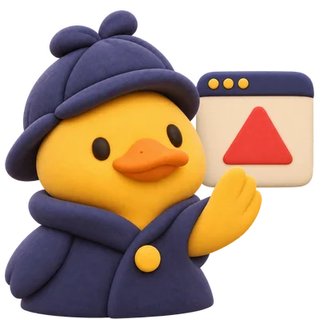
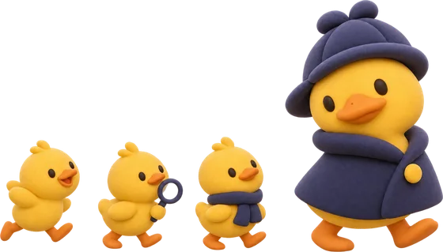

Deducktive: Recall, Watch, Circle
A menu bar duck. It reads the text on your screen, on your Mac.
Mac only today.
In development
Recall
Find something you saw, with where and when.
Reads words, not pictures or video.
The plumber's number?
(415) 555-0142
- Where
- Safari, Rivera Plumbing
- When
- Tuesday, 3:14 PM
In development
Watch
Notices scams as they happen, across apps and across steps.
No warning never means safe.

- ListingMallard Homes
- FormYour details
- E-mailTeal Rentals
Different company than the listing.
Planned
Circle
The few people you trust get a short note you wrote or approved, when you ask for help.
Not built yet.

Can you look at this with me?
- Sent to Maya
Privacy
- Today the app makes no network requests.
- Screen text is analysed on your Mac.
- Lookups, when they come, will run only when you click and will show what is sent.
- Always visible. One click pauses it.
In development.
Nothing to download or sign up for yet.